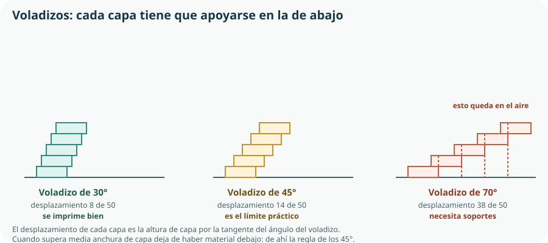

Este tema cierra el Proyecto 1 del KR-1: es donde el plano se convierte en pieza. Y contiene la lección más difícil de aceptar del bloque: el proceso de fabricación cambia el diseño. Una pieza que en la pantalla es perfecta puede ser imposible de imprimir, imposible de desmoldear o imposible de mecanizar, y el problema no es de la máquina. Aprender a diseñar sabiendo cómo se va a fabricar es lo que separa un modelo bonito de una pieza que existe.
- clasificar un proceso de fabricación en una de las cuatro familias y prever qué geometrías permite;
- distinguir prototipado rápido, preserie y producción, y decir para qué sirve cada uno;
- explicar qué es la fabricación bajo demanda y en qué cambia el coste por unidad;
- describir la cadena que va del modelo 3D al archivo de máquina en impresión, corte láser y control numérico;
- ajustar los parámetros de impresión relevantes y justificar su efecto en resistencia, tiempo y coste;
- aplicar reglas de diseño para la fabricación: voladizos, espesores, radios, orientación y tolerancias;
- elegir la técnica adecuada según geometría, cantidad, material, tolerancia, coste y medios disponibles;
- trabajar en el aula-taller con las medidas de seguridad e higiene que exige cada máquina.
1. Las cuatro familias de procesos de fabricación
Hay cientos de procesos industriales, pero todos responden a una de estas cuatro ideas: quitar material, deformarlo, darle forma en estado fluido o añadirlo. Y a esas cuatro se suma la que une las piezas entre sí. Clasificar un proceso en su familia permite anticipar lo que se puede y lo que no se puede pedirle.
| Familia | Idea | Procesos | Permite | No permite |
|---|---|---|---|---|
| Por arranque de material | Se parte de un bloque y se quita lo que sobra. | Serrado, taladrado, torneado, fresado, rectificado, corte láser. | Tolerancias muy finas y buen acabado. | Huecos internos cerrados; genera viruta y desperdicio. |
| Por deformación | El material cambia de forma sin perder masa. | Plegado, laminado, embutición, forja, estampación, extrusión. | Series grandes, muy rápido y sin desperdicio. | Requiere utillaje caro; solo materiales dúctiles. |
| Por moldeo | El material fluido toma la forma de un molde. | Fundición, inyección de plástico, termoconformado, colada de resina. | Formas complejas repetidas miles de veces, coste unitario bajísimo. | El molde cuesta mucho: no vale para una unidad. |
| Aditiva | Se añade material capa a capa donde hace falta. | Impresión 3D por filamento, por resina o por sinterizado. | Geometrías imposibles por otras vías, sin utillaje y en una unidad. | Lenta para series; propiedades dependen de la dirección. |
| De unión | Se juntan piezas ya conformadas. | Atornillado, remachado, soldadura, encolado, encaje a presión. | Combinar materiales distintos y permitir el desmontaje. | La unión suele ser el punto débil del conjunto. |
2. Prototipado rápido
El currículo nombra el prototipado rápido como técnica de fabricación, y conviene precisar qué significa «prototipo», porque no todos sirven para lo mismo. Un prototipo no es una versión pequeña del producto: es una pregunta construida. Antes de fabricarlo hay que saber a qué pregunta responde.
| Tipo | Pregunta que responde | Cómo se fabrica | Coste |
|---|---|---|---|
| De concepto | ¿Cabe todo dentro y se entiende la idea? | Cartón, cinta y un par de tornillos, en media hora. | Casi nulo |
| Dimensional | ¿Encaja la válvula en su alojamiento? | Solo la zona del alojamiento, impresa en PLA barato. | Bajo |
| Funcional | ¿Funciona el sistema completo? | Caja impresa en el material definitivo, con toda la electrónica. | Medio |
| De validación | ¿Aguanta un verano en el huerto? | Como el funcional, instalado en el sitio real y medido durante semanas. | Medio, pero cuesta tiempo |
3. Fabricación bajo demanda
La fabricación bajo demanda consiste en producir cuando existe el pedido, no para almacenar. Es posible cuando el proceso no exige utillaje específico —moldes, troqueles— y el tiempo de puesta en marcha es despreciable: justo las condiciones de la fabricación digital.
Producción para almacén
Se fabrica una serie grande, se guarda y se vende. Coste unitario bajo por el efecto de la serie del Tema 2. Riesgo: si el producto cambia o no se vende, el almacén es dinero perdido.
Fabricación bajo demanda
Se fabrica cada unidad al pedirla. Coste unitario más alto y constante, pero sin almacén, sin riesgo de obsolescencia y con personalización posible en cada unidad.
coste unitario = coste variable + coste del utillaje / número de unidades cuando no hay utillaje, el segundo término desaparece
4. Fabricación digital
Llamamos fabricación digital a los procesos en los que la máquina obtiene la geometría directamente de un archivo, sin plantillas ni utillaje intermedio. Todos comparten la misma cadena, que es la del CAM del Tema 3:
modelo CAD → archivo de intercambio → preparación (CAM) → programa de máquina → pieza
| Técnica | Qué hace | Geometría | Materiales | En el KR-1 |
|---|---|---|---|---|
| Impresión 3D por filamento | Deposita hilo fundido capa a capa. | Tridimensional, con huecos internos. | PLA, PETG, ABS, ASA, flexibles. | La caja, la tapa y el alojamiento de la válvula. |
| Corte láser | Corta o graba una plancha con un haz enfocado. | Plana: contornos en dos dimensiones y media. | Madera fina, contrachapado, acrílico, cartón. | El soporte de la placa y la plantilla de taladros. |
| Control numérico (CNC) | Fresa o taladra siguiendo trayectorias programadas. | Tridimensional accesible desde fuera. | Madera, polímeros, aluminio. | Una placa base de aluminio, si se necesita rigidez. |
5. Impresión 3D: los parámetros que importan
El laminador —el CAM de la impresora— ofrece decenas de ajustes. Seis deciden el resultado, y conviene saber qué compran y qué pagan cada uno.
| Parámetro | Si lo aumentas | Coste | Para la caja del KR-1 |
|---|---|---|---|
| Altura de capa | Imprime más rápido y con peor acabado. | Menos tiempo, peor detalle. | 0,2 mm: acabado suficiente y tiempo razonable. |
| Espesor de pared | Más resistencia y más material. | Más tiempo y más filamento. | 2 mm, o tres perímetros: es lo que exige el grado de protección. |
| Relleno | Más rigidez, con rendimiento decreciente. | Mucho más tiempo y material. | 20 %: pasar de 20 a 60 % apenas mejora y casi duplica el tiempo. |
| Temperatura | Mejor unión entre capas y más riesgo de deformación. | Precisión de detalle. | Según el fabricante del filamento; no se improvisa. |
| Orientación | Cambia por completo la resistencia de la pieza. | Puede exigir soportes. | Decisiva: se explica abajo. |
| Soportes | Permiten voladizos imposibles. | Material perdido y marcas al retirarlos. | Se evitan rediseñando, no añadiéndolos. |
Voladizos y la regla de los 45 grados

desplazamiento por capa = altura de capa × tan(ángulo del voladizo)
Con capas de 0,2 mm y una anchura de extrusión de 0,4 mm, el desplazamiento admisible es de unos 0,2 mm: exactamente lo que da un ángulo de 45°. De ahí la regla, que no es una superstición del gremio sino geometría elemental. Un chaflán de 45° en lugar de un saliente recto elimina el soporte, ahorra material y deja mejor superficie.
6. Diseñar para fabricar
El diseño para la fabricación consiste en incorporar las limitaciones del proceso al propio diseño, en lugar de descubrirlas cuando la pieza sale mal. Cada proceso tiene su lista; estas son las reglas que afectan al KR-1.
| Proceso | Regla | Por qué |
|---|---|---|
| Impresión 3D | Voladizos por debajo de 45° respecto a la vertical. | Cada capa necesita apoyo en la anterior. |
| Paredes múltiplo de la anchura de extrusión. | Una pared de 0,5 mm con boquilla de 0,4 mm deja huecos. | |
| Agujeros verticales ligeramente sobredimensionados. | Salen algo menores de lo nominal por contracción y por el trazado circular. | |
| Orientar la pieza según la dirección de la carga. | Anisotropía: entre capas la resistencia es menor. | |
| Corte láser | Compensar el espesor del haz en los encajes. | El haz consume material: un encaje nominal queda holgado. |
| No dejar islas sueltas dentro de un contorno cortado. | Caen dentro de la máquina al terminar el corte. | |
| Mecanizado | Todo rincón interior tiene un radio mínimo. | Una fresa cilíndrica no puede dejar una esquina perfectamente recta. |
| La herramienta tiene que poder llegar. | Un hueco interior cerrado no es mecanizable. | |
| Moldeo | Ángulos de desmoldeo en las paredes verticales. | Sin conicidad, la pieza no sale del molde. |
| Espesores uniformes. | Una zona gruesa se contrae al enfriarse y deja una marca hundida. |
7. Elegir la técnica de fabricación
El criterio 2.3 pide fabricar prototipos «empleando las técnicas de fabricación más adecuadas, incluidas las de fabricación digital, y aplicando los criterios técnicos y de sostenibilidad necesarios». La elección se decide con seis preguntas, en este orden:
- ¿Qué geometría tiene la pieza? Plana, de revolución, con huecos internos, con paredes finas. Esto ya descarta familias completas.
- ¿Cuántas unidades? Una, diez, cien, cien mil. Determina si se amortiza un utillaje.
- ¿Qué material exige el Tema 5? No todos los materiales admiten todos los procesos.
- ¿Qué tolerancia y qué acabado hacen falta? Solo en las cotas críticas: exigir precisión donde no importa encarece sin mejorar nada.
- ¿Qué medios hay disponibles de verdad? Una técnica que el centro no tiene no es una opción, es un deseo.
- ¿Qué coste ambiental tiene? Material desperdiciado, consumo de la máquina y posibilidad de reciclar los restos.
| Pieza | Técnica | Por qué esta y no otra |
|---|---|---|
| Caja y tapa | Impresión 3D en PETG | Hueca, con alojamientos interiores y paso de cables: geometría imposible por arranque y sin serie que amortice un molde. |
| Soporte de la placa | Corte láser en contrachapado de 4 mm | Es plana. Se corta en un minuto frente a las dos horas que costaría imprimirla. |
| Plantilla de taladros | Corte láser en acrílico | Útil de verificación del Tema 2: necesita precisión en la posición de los agujeros, no resistencia. |
| Escuadra de sujeción | Plegado de chapa o perfil comercial cortado | Deformación: más rápida, más rígida y sin desperdicio frente a imprimirla. |
| Tornillería y prensaestopas | Comercial normalizado | Fabricar lo que se compra normalizado es la peor decisión posible del Tema 2. |
8. Seguridad e higiene en el trabajo
Es contenido expreso del currículo y no un apéndice de buenas intenciones. La prevención de riesgos laborales en España se rige por la Ley 31/1995, que establece un principio aplicable tal cual al aula-taller: primero se evita el riesgo; lo que no se puede evitar se evalúa; y solo lo que queda se combate con protección.[1] El equipo de protección individual es el último recurso, nunca el primero.
¿Se puede hacer sin esa máquina? Cortar el contrachapado con láser evita la sierra de calar.
Usar un material o un proceso menos peligroso. Nunca cortar PVC con láser: se elige otro plástico.
Resguardos, carcasas, extracción de humos y enclavamientos que paran la máquina al abrirla.
Procedimiento escrito, formación previa, un solo operador por máquina y nunca trabajar solo en el taller.
Gafas, guantes cuando corresponda, protección auditiva, calzado cerrado. Lo último, no lo primero.
| Máquina o tarea | Riesgo principal | Medidas |
|---|---|---|
| Impresora 3D | Quemadura en boquilla y base; emisión de partículas y compuestos volátiles. | No tocar en caliente; ventilación o filtro, sobre todo con ABS y ASA; no dejarla sin vigilancia toda la noche. |
| Cortadora láser | Lesión ocular, incendio y humos tóxicos. | Nunca con la tapa abierta; extracción en marcha; extintor accesible; jamás cortar PVC ni materiales desconocidos; no dejarla sin vigilancia. |
| Taladro y fresadora | Atrapamiento, proyección de viruta, rotura de broca. | Pieza siempre amarrada, nunca sujeta con la mano; gafas; pelo recogido, sin guantes holgados, cadenas ni mangas sueltas. |
| Sierra de calar y de cinta | Corte, proyección, retroceso de la pieza. | Empujador, resguardo bajado, manos fuera de la línea de corte. |
| Soldadura de estaño | Quemadura; humos de fundente; plomo en soldaduras antiguas. | Soporte para el soldador, ventilación, lavado de manos al terminar, estaño sin plomo. |
| Lijado y acabado | Polvo respirable. | Lijado en húmedo o con aspiración, mascarilla adecuada. |
| Montaje eléctrico | Cortocircuito, quemadura, daño a la placa. | Montar siempre sin tensión; tensiones de seguridad; nunca red eléctrica en montajes escolares. Se detalla en el Tema 10. |
Comprueba lo que has aprendido
Este tema se demuestra con piezas fabricadas y con las decisiones de proceso escritas.
| Aspecto | Qué debes demostrar | Evidencias posibles |
|---|---|---|
| Elegir el proceso | Que asignas a cada pieza la técnica adecuada y justificas el descarte de las otras. | Tabla pieza → técnica → motivo, con el cálculo del punto de equilibrio frente a un molde. |
| Prototipar con método | Que cada prototipo responde a una pregunta y usa el material más barato posible. | Secuencia de prototipos fechados, con la pregunta de cada uno y lo aprendido. |
| Fabricación digital | Que controlas la cadena del archivo a la pieza y los parámetros que importan. | Parámetros elegidos con su motivo, pieza de prueba del láser, orientación razonada por la dirección de la carga. |
| Diseñar para fabricar | Que has modificado el diseño para hacerlo fabricable. | Al menos dos cambios de diseño documentados: un chaflán que elimina soportes, una holgura de encaje compensada. |
| Seguridad | Que aplicas el orden de prevención y las medidas de cada máquina. | Procedimiento de trabajo seguro de una máquina, riesgos identificados y registro de incidencias del taller. |
Cierre del Proyecto 1: con las piezas fabricadas, la documentación del Tema 4 y la memoria, el KR-1 ya es un producto. En el Bloque C empieza a moverse.
Glosario del tema
- Anisotropía
- Propiedad de un material o pieza cuyo comportamiento mecánico depende de la dirección considerada.
- Ángulo de desmoldeo
- Ligera conicidad dada a las paredes de una pieza moldeada para que pueda salir del molde.
- Arranque de material
- Familia de procesos en los que se parte de un bloque y se elimina el material sobrante.
- Conformación por deformación
- Familia de procesos en los que el material cambia de forma sin variar su masa.
- Control numérico
- Gobierno automático de una máquina herramienta mediante un programa de trayectorias.
- Diseño para la fabricación
- Práctica de incorporar al diseño las limitaciones del proceso con el que se va a fabricar.
- Fabricación aditiva
- Familia de procesos en los que la pieza se construye añadiendo material capa a capa.
- Fabricación bajo demanda
- Producción de cada unidad cuando existe el pedido, sin fabricar para almacén.
- Fabricación digital
- Procesos en los que la máquina obtiene la geometría directamente de un archivo, sin utillaje específico.
- Laminador
- Programa que convierte un modelo 3D en las trayectorias y el código que ejecuta la impresora.
- Línea de junta
- Marca que deja en la pieza el plano de cierre de las dos mitades de un molde.
- Moldeo
- Familia de procesos en los que el material fluido adopta la forma de un molde.
- Prototipado rápido
- Fabricación de prototipos en plazos muy cortos y sin utillaje, para responder preguntas de diseño.
- Punto de equilibrio
- Número de unidades a partir del cual un proceso con utillaje resulta más económico que otro sin él.
- Relleno
- Estructura interna con que se rellena una pieza impresa, expresada en porcentaje de su volumen.
- Soporte
- Material provisional que se imprime para sostener un voladizo y se retira al terminar.
- Utillaje
- Conjunto de moldes, troqueles, plantillas y útiles específicos que un proceso necesita para una pieza concreta.
- Voladizo
- Parte de una pieza impresa que sobresale sin material debajo que la sostenga.
Resumen esencial
- Todo proceso de fabricación quita material, lo deforma, le da forma en estado fluido o lo añade; y una quinta familia une las piezas entre sí.
- En fabricación por arranque la complejidad geométrica encarece; en fabricación aditiva es casi gratuita, y eso invierte las reglas del diseño.
- Un prototipo es una pregunta construida: uno por pregunta, con el material más barato que permita responderla.
- Prototipo, preserie y producción no son etapas intercambiables; saltarse la preserie produce el clásico «en el prototipo funcionaba».
- La fabricación bajo demanda elimina el utillaje y el almacén a cambio de un coste unitario constante; el punto de equilibrio se calcula, no se intuye.
- La fabricación digital comparte una sola cadena: modelo CAD, archivo de intercambio, preparación, programa de máquina y pieza.
- En impresión 3D, altura de capa, espesor, relleno, temperatura, orientación y soportes son las seis decisiones reales; el resto son matices.
- Una pieza impresa es anisótropa: entre capas resiste bastante menos, de modo que la orientación es una decisión de diseño.
- La regla de los 45° es geometría: el desplazamiento por capa es la altura de capa por la tangente del ángulo, y no puede superar media anchura de capa.
- Si es plana, se corta; si es hueca o compleja, se imprime; si es normalizada, se compra. Usar la impresora para todo agota el calendario.
- La prevención sigue un orden: eliminar, sustituir, aislar, organizar y, solo al final, proteger con equipo individual.
- Tres reglas inflexibles: formación antes de usar cualquier máquina, sin guantes en máquinas con giro, y nunca cortar ni calentar un material sin identificar.
Fuentes y recursos fiables
- [1] Ley 31/1995, de 8 de noviembre, de Prevención de Riesgos Laborales. Principios de la acción preventiva (artículo 15).
- [2] Instituto Nacional de Seguridad y Salud en el Trabajo (INSST). Fichas y notas técnicas de prevención por equipo de trabajo.
- [3] INSST — Catálogo de publicaciones. Guías técnicas de máquinas, equipos de protección individual y señalización.
- [4] UNE — Asociación Española de Normalización. Señalización de seguridad (UNE-EN ISO 7010) y terminología de fabricación aditiva (UNE-EN ISO/ASTM 52900).
- [5] FreeCAD. Modelado de las piezas y exportación a los formatos de fabricación.
- [6] Decreto 64/2022, de 20 de julio (BOCM). Currículo de Tecnología e Ingeniería I, bloque B y criterio 2.3.